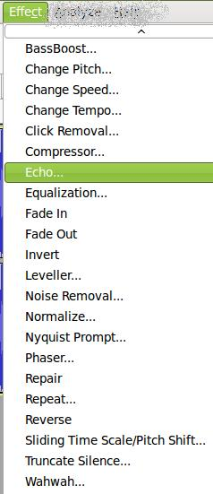

Edición de Audio y video
2.2. Menús en Diferentes Versiones
| LLIUREX | UBUNTU 10.10 | WINDOWS |
|  |
Las opciones del Menú de Efectos, dependiendo de su distribucción y de la plataforma o Sistema Operativo en el que se ejecute, puede tener una apariencia diferente, aunque el contenido y finalidad de los mismos es igual en todas las versiones.
Jo.R.C.A. 2004 - 2011

Edición de Audio y Video con Software Libre by José Ramón Cerdeira Alonso is licensed under a Creative Commons Reconocimiento-No comercial-Compartir bajo la misma licencia 3.0 España License